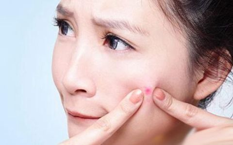
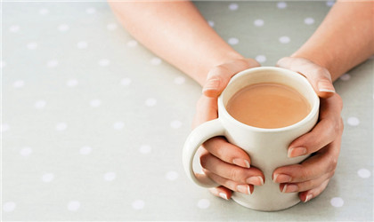
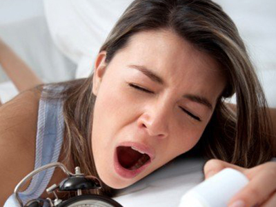
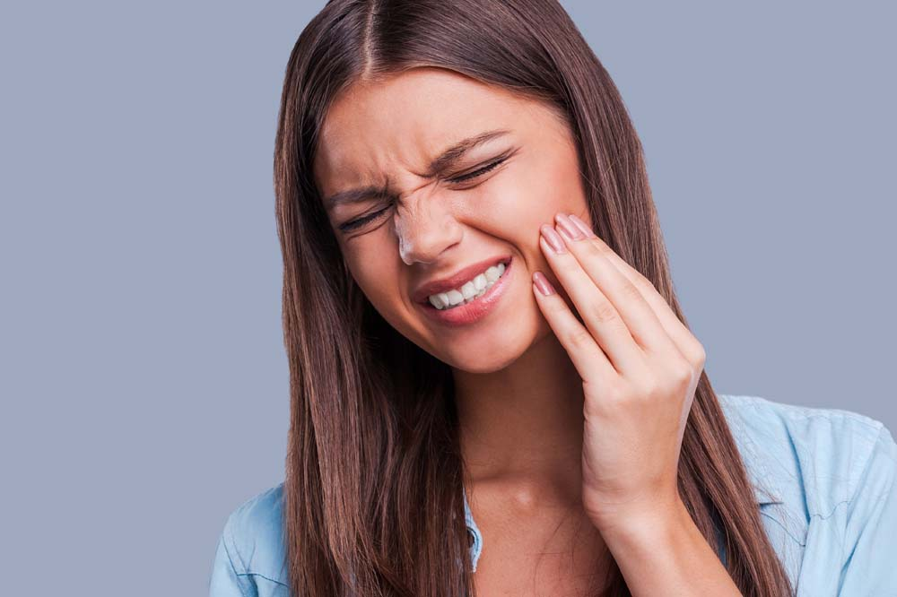
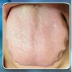

我的体质测试结果
我的体质是
阳虚质
根据您的体质辨识结果，建议你从阳虚质开始调理，阳虚是一种身体阳气不足，失于温煦，以形寒肢冷等虚汗表现为主要特征的体质。随着年龄的增长会变成阳虚兼血瘀、阳虚兼痰湿体质。
    
什么是阳虚？
火力不够，阳气不足。
平时怕冷，手脚不暖和。
喜欢吃热的东西，不太喜欢吃凉的东西。
精神不振，睡眠偏多。
阳虚体质有什么困扰？
怕冷，尤其背、腹部。到冬天手冷过肘，足冷过膝。
没到老年，总起夜，小便多，清清白白。
阳虚没有火力，水谷转化不彻底，就会经常拉肚子。
脚跟、腰腿疼痛、下肢易肿胀。
低血压，头晕，心悸气短。
头发稀疏、脱发。
睡眠轻、容易惊醒。
黑眼圈、口唇发暗。
上热下寒：常牙痛、口臭、面红油腻、痤疮。
我为什么会阳虚？
熬夜，总是超过23点也不睡觉。
冷饮和凉茶是日常饮品，喜吹空调。
冬季露着膝盖穿短裙，夏季空调下穿露脐装。
过度控制饮食，营养不良。
先天禀赋不足，父母为阳虚质。
吃了太多的生冷寒凉食物或者工作环境湿冷。
长期、大量用抗生素、激素类、利尿剂、清热解毒中药等。
久病损伤阳气。
长期大量运动，或喜欢桑拿 ，出汗过度。
阳虚体质更容易患哪些疾病？
感冒：别人一有感冒，自己总是第一个被传染，多由阳气不足、卫表不固造成的。
肥胖：如果你是一个又白又软的胖子，那么减肥首先要考虑加强阳气的补养，绝对不要忍饥挨饿。
骨质疏松、风湿性关节炎：阳虚质到了更年期、老年期很容易患骨质疏松及风湿性关节炎。
关节炎、类风湿：阳虚的人容易遭受风寒湿邪的侵袭，从而导致血脉痹阻不通。
水肿：体内水液不能蒸腾，会出现小腿或脚踝水肿。
痛经、宫寒：因寒性收引，常有痛经，月经延后，甚至闭经，严重可导致宫寒不易受孕，或子宫肌瘤、卵巢囊肿、子宫膜异位。
冠心病、心率失常：有一种冠心病是因阳气不足，心（胸）阳不振，痰浊凝聚，气血瘀滞，痰浊、阴寒、瘀血痹阻心脉导致。
甲状腺功能低下：特别怕冷，特别没精神，血压低。
过敏性鼻炎、哮喘：体内寒气过重，天气变冷，或遇冷空气就喷嚏不断，发展出鼻塞，鼻息肉，甚至严重会发展到哮喘。
轻妍教你这么改善！
饮食调理：
饮食上要多吃些令身体温暖的食物：粮食类的面粉、高粱、糯米等；肉类的羊肉、牛肉、鸡肉、狗肉、鹿肉、麻雀、公鸡等；鱼类的草鱼、鲫鱼等；菜类的韭菜、芥菜、香菜、南瓜、生姜等；坚果类的核桃、松子、腰果、花生；水果类的荔枝、龙眼、桃子、大枣、核桃、桔子、樱桃等。也要适当吃些熟萝卜、白菜、芹菜、青菜，以免进补过度而上火。单独吃青菜的时候需要用些热性的调料，如：生姜、大蒜、胡椒等。黄芪、枸杞可以作为炖菜煲汤的配料。
寒凉食物少吃：性味寒凉之物，如兔肉、鸭肉、鸭蛋、柿子、苦瓜、冬瓜、香蕉、西瓜等，应少吃或不吃。罗汉果、金银花、菊花、薄荷也不适合吃。
中药调理：
阳虚者当以补肾温阳、培本固元、强身健体为首要原则。可以补阳的中药有人参、肉桂、干姜、短梗五加、山药、茯苓、白扁豆、鹿茸、紫河车、淫羊藿、巴戟天、仙茅、杜仲、续断、肉苁蓉、锁阳、补骨脂、益智仁、菟丝子、沙苑子、蛤蚧、核桃仁、冬虫夏草、葫芦巴、韭菜子、阳起石、紫石英、海狗肾等。
忌食生冷：冷饮、冰箱里刚拿出来的食物一定不要再碰，寒凉最伤脾胃。
注意保暖：
腹背，小腹（女孩子的子宫所在，需重点保护），腰部，脚和腿是保暖的重点。每晚烫脚，搓后腰。后腰暖融融最养肾。
多运动：
动能生阳，选择温和的运动，最好在户外阳光里。
轻松愉快：
阳虚的人大多安静、内敛，所以不宜选择过于兴奋、亢奋，张扬的活动和工作。应多听轻松、活泼的音乐。
拒绝熬夜：
23点前睡觉是底线，子夜是养阳的最佳时机。
关注穴位：
神阙、气海、关元、中极，艾灸、推揉都可以。
网站首页
一键拨号
体质分析